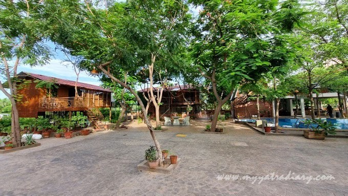
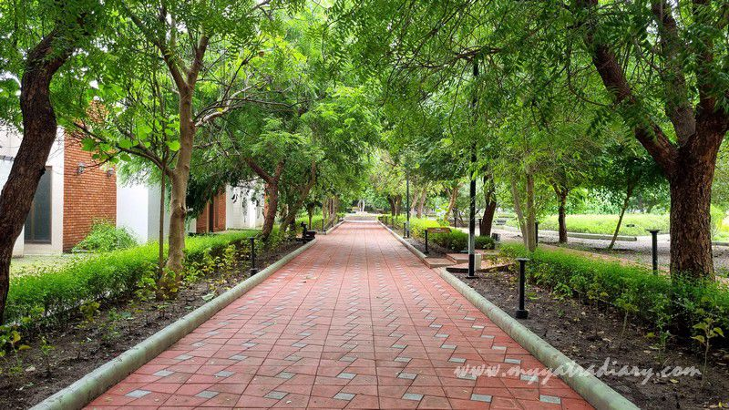
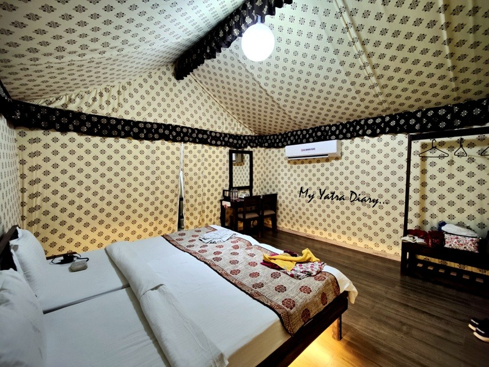
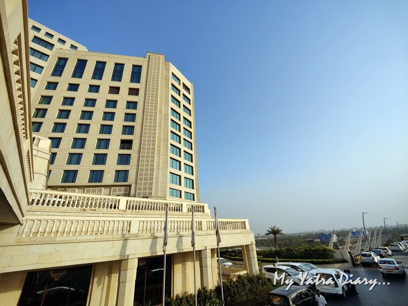

Gujarat is a state known for its rich culture and heritage. Be it the warm amiability of the people, the vibrant festivals, the folk arts or the lipsmacking Gujarati cuisine: Gujarat proudly stands out in its versatile character and charming persona.
During my several visits to the state, I've had the chance to stay at some of the most luxurious resorts in and around Ahmedabad that are perfect for families, couples or solo. Most of these resorts are strategically located around key points of attractions yet afford a luxurious escape from the daily hustle and bustle of the city.
1.VISAMO NALSAROVAR RESORT
The best of luxury meets nature; smack in the middle of wilderness at Visamo Nal sarover located near the famous Nalsarover sanctuary around 50 km, an hour’s drive from Ahmedabad. It's so near to the city yet quietly tucked to escape the immediate loudness and crowdedness. Walk into the resort and you’ll breathe a breath of fresh air.
The USP:
How to reach Visamo from Ahmedabad:
You can easily get an OLA/UBER from Ahmedabad which costed us Rs. 1000/- or it’s easily accessible by your own vehicle.
Places to visit around VISAMO Nalsarover:
Nalsarover bird sanctuary, Thol Lake Bird Sanctuary, Lothal, Sarangpur Hanumanji Temple, Koth Ganpati Temple.
Price: Starting at INR 6000 per night.
Website: VisamoFarmStays
2.ATMANEEM WELLNESS RESORT
Have you been thinking of getting your friends or family a nice present, but don’t know what they’d like? Well, here’s a suggestion of a holiday which will not only relax your mind but will also help you to move towards a healthier lifestyle. Atmaneem nature cure is a beautiful naturopathy centre and wellness resort situated on the outskirts of Rajkot, along the scenic banks of the Nyari river away from the chaos of Ahmedabad.
The USP:
How to reach Atmaneem Wellness Resort from Ahmedabad:
You can easily reach via bus, car, taxi or train. The nearest railway station is Rajkot from where you can hire a car (Rs. 400). From Amedabad, a car will cost you around INR 2500.
Price: Starting at around INR 11000.
Website: Atmaneem
3.PRAVEG TENT CITY NARMADA, TENT CITY 2, STATUE OF UNITY.
If you are looking for a memorable weekend getaway from Ahmedabad or just thinking of a destination to spend some quality nature time with family – this is the place to go! Their glamping tents offer an ideal amalgamation of exploration, relaxation and indulgence in nature without compromising any of the finer things in life.
The USP:
How to reach Praveg Tent City Narmada, Tent City 2, Statue of Unity from Ahmedabad:
You can reach Tent City Narmada from Ahmedabad either by road or train. You can hire a private car or take a state bus from Ahmedabad to Kevadiya, takes around 3-4 hours. Another convenient way is to take a train from Ahmedabad to Vadodara, and then take a connecting train to Kevadiya.
Places to visit around Praveg Tent City Narmada, Tent City 2, Statue of Unity:
Statue of Unity, Boat ride, Valley of flowers, Riverfront cycling, Jungle safari, Pet Zone, Unity Glow Garden, Sardar Sarovar Dam View Points, Shoolpaneswar Mahadev Temple, Narmada Maha Arti, Butterfly Garden and much more.
Check this link to plan your complete statue of Unity tour: Link
Price: Starting at INR 6200 + GST per night.
4.The Leela Gandhinagar
If you’re longing for a luxurious escape in Gandhinagar, then head straight to the drop dead gorgeous and the finest hotel in town, The Leela Gandhinagar. The Leela Palace Gandhinagar is located merely 30 minutes from the Ahmedabad airport and exemplifies the modern grandeur with the effervescent old world traditions of Gujarat
The USP:
Full review of the hotel here: Review
How to reach The Leela Gandhinagar from Ahmedabad:
You can reach The Leela Gandhinagar by taxi, car or bus. It is around 30 kms from the city and should take around 30 minutes to an hour.
Places to visit around The Leela Gandhinagar:
Sabarmati Ashram, Indroda Dinosaur and Fossil Park, Kankaria Lake, Akshardham Temple, Adalaj Step Well, Kirti Stambh, Hatkeswar Mahadev Mandir, Dandi Kutir Ashram, Craftsman Village.
Price: Starting at around INR 10,000.